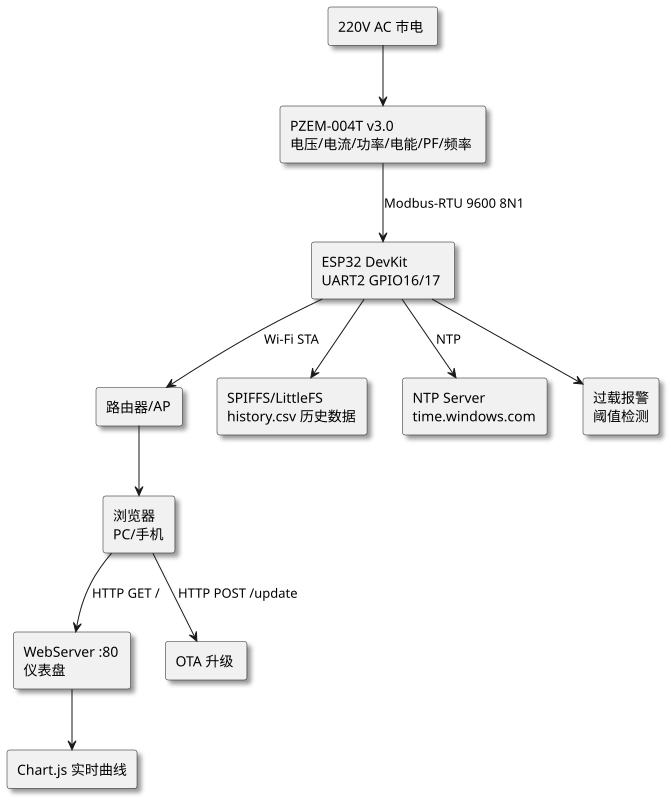
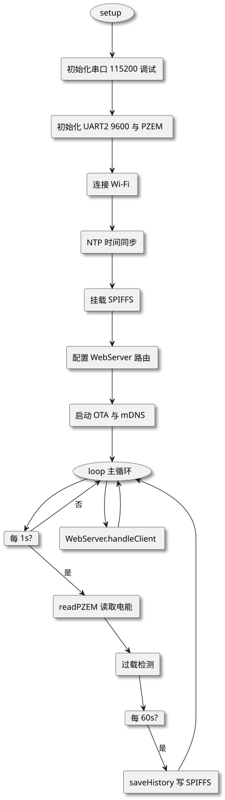

第 44 章 智能电能监测（ESP32+PZEM-004T+OTA+Web 仪表盘）
学习目标
- 理解智慧能源场景下交流电能监测的工程需求与关键指标
- 掌握 PZEM-004T v3.0 模块的 Modbus-RTU 通信协议与电能测量原理
- 学会使用 ESP32 UART2 与 PZEM-004T 通信并解析电压/电流/功率/电能/频率/功率因数
- 掌握基于 ESP32 Arduino Update 库的 OTA 在线升级实现方法
- 能基于 WebServer + Chart.js + SPIFFS 构建实时 Web 仪表盘并存储历史数据
- 理解强电作业的安全规范与互感器隔离原理
§44.1 项目需求分析
本项目面向智慧能源行业，设计一款基于 ESP32 与 PZEM-004T v3.0 交流电能测量模块的智能电能监测终端，通过 Wi-Fi 实现 Web 仪表盘访问、OTA 远程升级、历史数据存储与统计分析，可作为家庭能耗监测、小型配电柜监测、教学实验装置的原型。
§44.1.1 功能需求
- 电能参数采集：实时测量交流电压、电流、有功功率、电能累计、频率、功率因数共 6 项参数，采样周期 ≤ 1s。
- 本地显示：通过 ESP32 内置 Web 服务器提供 HTML 仪表盘，浏览器访问即可查看实时数据与历史曲线。
- 历史数据存储：基于 SPIFFS 或 LittleFS 将每分钟一条采样记录写入 Flash，至少可保存 7 天数据。
- OTA 远程升级：支持通过浏览器上传
.bin固件完成在线升级，无需 USB 连接。 - 过载报警：当电流或功率超过设定阈值（默认 16A / 3500W）时，Web 仪表盘红色高亮，并通过 MQTT/邮件（可选）通知用户。
- 电费估算：根据用户输入的电价（默认 0.6 元/kWh）实时估算电费累计。
- 时间同步：通过 NTP 自动同步 UTC+8 时间，历史数据带时间戳。
§44.1.2 智慧能源指标
参考国家电网智能用电采集系统与 IEEE 1459 电能计量标准，本项目应满足以下指标：
| 指标项 | 设计目标 | 说明 |
|---|---|---|
| 电压测量范围 | 80–260 V AC | 覆盖单相 110V/220V 电网 |
| 电流测量范围 | 0–100 A AC | 外接 100A/50mA 互感器 |
| 功率测量范围 | 0–22 kW | 满足一般家庭总负荷 |
| 电能累计 | 0–9999.99 kWh | 精度 1.0 级 |
| 频率测量 | 45–65 Hz | 分辨率 0.1Hz |
| 功率因数 | 0–1.0 | 分辨率 0.01 |
| 数据刷新周期 | ≤ 1 s | Web 仪表盘 AJAX 拉取 |
| 历史数据保留 | ≥ 7 天 | SPIFFS 文件存储 |
| OTA 升级时间 | < 60 s | 1.3MB 固件 |
§44.1.3 应用场景
- 家庭能耗监测：安装在配电箱总开关处，实时统计家庭总用电量、识别大功率电器启动事件。
- 教学实验装置：作为电工电子课程负载监测模块，可视化展示功率因数补偿、谐波影响等概念。
- 小型商铺电费核算：分时段记录能耗数据，辅助商铺进行峰谷电价优化决策。
- 分布式光伏监测：监测逆变器输出功率与发电量，评估光伏系统效率。
- 智慧校园：教室、实验室分路监测，支撑校园能源管理系统（EMS）。
§44.2 系统架构设计
系统采用"感知—通信—存储—展示—升级"五层架构，ESP32 作为核心控制器，统一调度各模块。感知层由 PZEM-004T 通过 Modbus-RTU 提供原始电能数据；通信层由 ESP32 Wi-Fi 承担，向上提供 HTTP 服务、向下提供串口通信；存储层使用 SPIFFS 文件系统持久化历史数据；展示层由内置 WebServer 提供 HTML+Chart.js 仪表盘；升级层基于 Arduino Update 库支持 OTA。

查看 PlantUML 源码
@startuml
skinparam defaultFontName "Microsoft YaHei"
skinparam backgroundColor #ffffff
skinparam componentStyle rectangle
skinparam shadowing true
top to bottom direction
component "220V AC 市电" as AC
component "PZEM-004T v3.0\n电压/电流/功率/电能/PF/频率" as PZEM
component "ESP32 DevKit\nUART2 GPIO16/17" as ESP32
component "路由器/AP" as AP
component "浏览器\nPC/手机" as CLIENT
component "WebServer :80\n仪表盘" as WEB
component "OTA 升级" as OTA
component "Chart.js 实时曲线" as CHART
component "SPIFFS/LittleFS\nhistory.csv 历史数据" as FS
component "NTP Server\ntime.windows.com" as NTP
component "过载报警\n阈值检测" as ALERT
AC --> PZEM
PZEM --> ESP32 : Modbus-RTU 9600 8N1
ESP32 --> AP : Wi-Fi STA
AP --> CLIENT
CLIENT --> WEB : HTTP GET /
CLIENT --> OTA : HTTP POST /update
WEB --> CHART
ESP32 --> FS
ESP32 --> NTP : NTP
ESP32 --> ALERT
@enduml架构设计要点：
- 分层解耦：感知、通信、存储、展示、升级各层独立，便于单独替换（例如将 SPIFFS 替换为 SD 卡，或将 WebServer 替换为 MQTT Broker）。
- 双串口设计：UART0（GPIO1/3）保留给 USB 调试日志，UART2（GPIO16/17）专用于 PZEM-004T 通信，避免冲突。
- 异步任务调度：采样任务每秒执行，存储任务每分钟执行，OTA 在浏览器上传时触发，互不阻塞。
- 安全隔离：PZEM-004T 内置光耦与互感器实现强弱电隔离，ESP32 侧全部为低压 TTL 电平。
§44.3 硬件设计
§44.3.1 BOM 物料清单
| 序号 | 元件名称 | 规格 | 数量 | 用途 | 参考单价/元 |
|---|---|---|---|---|---|
| 1 | ESP32 DevKit V1 | ESP-WROOM-32，38 引脚，4MB Flash | 1 | 主控 MCU + Wi-Fi | 25 |
| 2 | PZEM-004T v3.0 模块 | AC 80-260V，0-100A，Modbus-RTU | 1 | 电能测量 | 35 |
| 3 | 电流互感器 CT | 100A/50mA 外接式 | 1 | 交流电流采样 | 15 |
| 4 | DC-DC 降压模块 | MP1584 或 LM2596，5V 输出 | 1 | 为 ESP32 供电 | 5 |
| 5 | AC 220V 电源线 | 带插头 1.5m² 铜芯 | 1 | 市电输入 | 8 |
| 6 | 接线端子 | 2.54mm 螺纹端子，2 位 | 4 | 市电连接 | 2 |
| 7 | 面包板/洞洞板 | 7×9cm | 1 | 元件承载 | 5 |
| 8 | 杜邦线 | 母对母 20cm | 10 | 低压信号连接 | 2 |
| 9 | 漏电保护插头 | 30mA 漏电动作 | 1 | 安全保护 | 20 |
| 10 | 外壳 | 阻燃 ABS 100×68×50mm | 1 | 封装 | 10 |
§44.3.2 接线表
| PZEM-004T 端 | ESP32 端 | 功能 | 备注 |
|---|---|---|---|
| VCC (5V) | VIN / 5V | 模块供电 | 共地 |
| GND | GND | 共地 | — |
| TX | GPIO16 (RX2) | PZEM 发送 → ESP32 接收 | 交叉连接 |
| RX | GPIO17 (TX2) | ESP32 发送 → PZEM 接收 | 交叉连接 |
| L (火线) | 市电 L | 电压采样 | 强电 |
| N (零线) | 市电 N | 电压采样 | 强电 |
| CT+ / CT- | 互感器二次侧 | 电流采样 | 方向不可错 |
§44.3.3 供电设计
整体供电由 220V 市电经 AC-DC 隔离电源模块（5V/2A）输出，同时为 PZEM-004T 与 ESP32 供电。ESP32 工作电流峰值约 240mA（Wi-Fi 发射时），PZEM-004T 工作电流 < 30mA，5V/2A 电源余量充足。需要注意：PZEM-004T v3.0 的 GND 与市电 N 不共地（内置隔离），ESP32 侧 GND 全部为低压侧 GND，避免短路。
§44.4 PZEM-004T 通信协议与电能测量原理
§44.4.1 Modbus-RTU 帧格式
§44.4.1.1 协议概述与请求帧
PZEM-004T v3.0 使用 Modbus-RTU 协议通过 TTL 串口通信，参数为 9600bps、8 数据位、无校验、1 停止位（8N1），默认从机地址 0x01。所有寄存器均为 16 位，部分参数（电压、电流、功率、电能）占用 2 个寄存器。Modbus-RTU 帧结构如下表：
| 字段 | 长度 | 说明 |
|---|---|---|
| 从机地址 | 1 字节 | 默认 0x01，可修改 0x01–0xF7 |
| 功能码 | 1 字节 | 0x03 读保持寄存器 / 0x06 写单个寄存器 / 0x10 写多个寄存器 |
| 起始地址 | 2 字节 | 大端序 |
| 寄存器数量 | 2 字节 | 读取长度 |
| CRC16 | 2 字节 | 低字节在前（小端序） |
§44.4.1.2 响应帧格式
响应帧格式：
| 字段 | 长度 | 说明 |
|---|---|---|
| 从机地址 | 1 字节 | 同请求 |
| 功能码 | 1 字节 | 0x03 |
| 字节计数 | 1 字节 | = 寄存器数量 × 2 |
| 数据 | N 字节 | 大端序 |
| CRC16 | 2 字节 | 低字节在前 |
§44.4.1.3 寄存器映射
PZEM-004T v3.0 寄存器映射表（关键寄存器）：
| 地址 | 参数 | 单位 | 数据类型 | 分辨率 |
|---|---|---|---|---|
| 0x0000 | 电压 | V | uint16 | 0.1V |
| 0x0001–0x0002 | 电流 | A | uint32 | 0.001A |
| 0x0003–0x0004 | 功率 | W | uint32 | 0.1W |
| 0x0005–0x0006 | 电能 | kWh | uint32 | 0.001kWh |
| 0x0007 | 频率 | Hz | uint16 | 0.1Hz |
| 0x0008 | 功率因数 | — | uint16 | 0.01 |
| 0x0009 | 报警状态 | — | uint16 | 0xFFFF=报警 |
§44.4.2 电压电流互感原理
§44.4.2.1 互感器原理
PZEM-004T 内部采用两种互感方式实现强弱电隔离：
- 电压互感：通过高阻值电阻分压网络将 220V 交流电压衰减至毫伏级，经运算放大器输入 ADC 采样。电压采样精度 0.5%。
- 电流互感器（CT）：外接 100A/50mA 比例互感器，火线穿过 CT 中心孔，根据电磁感应原理在二次侧产生比例电流，经采样电阻转换为电压信号。变比 = 100A / 0.05A = 2000:1。
§44.4.2.2 RMS 计算与功率因数
电压、电流同步采样后，通过 RMS（均方根）计算获得有效值：$V_{rms} = \sqrt{\frac{1}{N}\sum_{i=1}^{N}v_i^2}$，同理 $I_{rms}$。有功功率 $P = \frac{1}{N}\sum_{i=1}^{N}v_i \cdot i_i$，功率因数 $PF = P / (V_{rms} \cdot I_{rms})$。电能通过对有功功率时间积分获得：$W = \int_0^T P\, dt$，单位 kWh。
§44.4.3 电能累加算法
PZEM-004T 内部维护电能累计寄存器（0x0005–0x0006），每次采样后自动累加：$\Delta W = P \cdot \Delta t / 3600$（kWh）。当寄存器溢出（达到 9999.99kWh）后会自动归零，需要在软件层实现"溢出回绕检测"：当本次读数小于上次读数时，认为发生了一次溢出，应将累计电费加上"满量程 − 上次读数 + 本次读数"的差值。
§44.4.4 校准方法
PZEM-004T v3.0 出厂已校准，但若发现读数偏差较大可手动校准：
- 准备标准源：调压器输出 220V、负载 1kW 标准电阻。
- 读取当前电压/电流/功率，计算偏差百分比。
- 通过功能码 0x10 写入校准寄存器（地址 0x0002 起，参考厂家手册）。
- 重复步骤 2-3 直至偏差 < 1%。
校准操作需谨慎，错误的校准数据会导致测量失效，建议先记录原始校准值。
§44.5 软件架构与关键代码
§44.5.1 任务流程图
软件采用"主循环 + 定时回调"模式，避免阻塞式延时。任务调度通过 millis() 时间片轮询实现：

查看 PlantUML 源码
@startuml
skinparam defaultFontName "Microsoft YaHei"
skinparam backgroundColor #ffffff
skinparam componentStyle rectangle
skinparam shadowing true
top to bottom direction
usecase "setup" as START
component "初始化串口 115200 调试" as INIT1
component "初始化 UART2 9600 与 PZEM" as INIT2
component "连接 Wi-Fi" as INIT3
component "NTP 时间同步" as INIT4
component "挂载 SPIFFS" as INIT5
component "配置 WebServer 路由" as INIT6
component "启动 OTA 与 mDNS" as INIT7
usecase "loop 主循环" as LOOP
card "每 1s?" as T1
component "readPZEM 读取电能" as READ
component "过载检测" as CHECK
card "每 60s?" as T2
component "saveHistory 写 SPIFFS" as SAVE
component "WebServer.handleClient" as WEB
START --> INIT1
INIT1 --> INIT2
INIT2 --> INIT3
INIT3 --> INIT4
INIT4 --> INIT5
INIT5 --> INIT6
INIT6 --> INIT7
INIT7 --> LOOP
LOOP --> T1
T1 --> READ : 是
READ --> CHECK
CHECK --> T2
T2 --> SAVE : 是
SAVE --> LOOP
T1 --> LOOP : 否
LOOP --> WEB
WEB --> LOOP
@enduml§44.5.2 完整 Arduino 代码
§44.5.2.1 代码框架说明
以下为完整可运行的 Arduino 工程，基于 ESP32 Arduino Core 2.0.x，依赖库：ESPmDNS、WebServer、Update、FS、SPIFFS、WiFi。完整工程位于 /code/esp32/energy-monitor/。
#include <Arduino.h>
#include <WiFi.h>
#include <WebServer.h>
#include <ESPmDNS.h>
#include <Update.h>
#include <FS.h>
#include <SPIFFS.h>
#include <time.h>
/* ============ 用户配置 ============ */
const char* WIFI_SSID = "Your-SSID";
const char* WIFI_PASSWORD = "Your-Password";
const char* HOST_NAME = "esp32-energy";
const float PRICE_PER_KWH = 0.6f; // 电价（元/kWh）
const float CURRENT_ALARM = 16.0f; // 电流报警阈值（A）
const float POWER_ALARM = 3500.0f; // 功率报警阈值（W）
/* ============ PZEM-004T Modbus ============ */
#define PZEM_ADDR 0x01
#define PZEM_BAUD 9600
#define PZEM_READ_REG 0x04 // 输入寄存器读
#define PZEM_VOLT 0x0000
#define PZEM_COUNT 10 // 读取 10 个寄存器
HardwareSerial PZEMSerial(2); // UART2: GPIO16=RX, GPIO17=TX
/* ============ 全局对象 ============ */
WebServer server(80);
/* ============ 电能数据结构 ============ */
struct EnergyData {
float voltage; // V
float current; // A
float power; // W
float energy; // kWh
float frequency; // Hz
float pf; // 0-1
float cost; // 元（累计）
bool alarm; // 报警标志
char timestamp[25]; // "YYYY-MM-DD HH:MM:SS"
};
EnergyData g_data;
float g_lastEnergy = 0.0f;
float g_totalCost = 0.0f;
/* ============ 时间片变量 ============ */
unsigned long lastSample = 0;
unsigned long lastSave = 0;
const unsigned long SAMPLE_INTERVAL = 1000; // 1s
const unsigned long SAVE_INTERVAL = 60000; // 60s
/* ============ CRC16 (Modbus) ============ */
uint16_t modbusCRC(const uint8_t* buf, uint8_t len) {
uint16_t crc = 0xFFFF;
for (uint8_t i = 0; i < len; i++) {
crc ^= (uint16_t)buf[i];
for (uint8_t b = 0; b < 8; b++) {
if (crc & 0x0001) crc = (crc >> 1) ^ 0xA001;
else crc >>= 1;
}
}
return crc;
}
/* ============ 读取 PZEM-004T ============ */
bool readPZEM() {
uint8_t req[8] = { PZEM_ADDR, 0x04, 0x00, 0x00, 0x00, PZEM_COUNT, 0x00, 0x00 };
uint16_t crc = modbusCRC(req, 6);
req[6] = crc & 0xFF;
req[7] = (crc >> 8) & 0xFF;
while (PZEMSerial.available()) PZEMSerial.read(); // 清空接收缓冲
PZEMSerial.write(req, 8);
PZEMSerial.flush();
// 等待响应：1+1+1+20+2 = 25 字节
uint32_t t0 = millis();
uint8_t resp[25];
uint8_t idx = 0;
while (millis() - t0 < 200 && idx < 25) {
if (PZEMSerial.available()) resp[idx++] = PZEMSerial.read();
}
if (idx < 25) return false;
// CRC 校验
uint16_t rxCrc = (resp[24] << 8) | resp[23];
if (modbusCRC(resp, 23) != rxCrc) return false;
// 解析
g_data.voltage = ((resp[3] << 8) | resp[4]) * 0.1f;
uint32_t curRaw = ((uint32_t)resp[5] << 24) | ((uint32_t)resp[6] << 16)
| ((uint32_t)resp[7] << 8) | resp[8];
g_data.current = curRaw * 0.001f;
uint32_t pwrRaw = ((uint32_t)resp[9] << 24) | ((uint32_t)resp[10] << 16)
| ((uint32_t)resp[11] << 8) | resp[12];
g_data.power = pwrRaw * 0.1f;
uint32_t eneRaw = ((uint32_t)resp[13] << 24) | ((uint32_t)resp[14] << 16)
| ((uint32_t)resp[15] << 8) | resp[16];
g_data.energy = eneRaw * 0.001f;
g_data.frequency = ((resp[17] << 8) | resp[18]) * 0.1f;
g_data.pf = ((resp[19] << 8) | resp[20]) * 0.01f;
// 电能溢出回绕处理
if (g_data.energy < g_lastEnergy) {
g_totalCost += (9999.99f - g_lastEnergy + g_data.energy) * PRICE_PER_KWH;
} else {
g_totalCost += (g_data.energy - g_lastEnergy) * PRICE_PER_KWH;
}
g_lastEnergy = g_data.energy;
g_data.cost = g_totalCost;
// 报警判定
g_data.alarm = (g_data.current > CURRENT_ALARM || g_data.power > POWER_ALARM);
// 时间戳
struct tm timeinfo;
if (getLocalTime(&timeinfo)) {
strftime(g_data.timestamp, sizeof(g_data.timestamp),
"%Y-%m-%d %H:%M:%S", &timeinfo);
}
return true;
}
/* ============ SPIFFS 历史存储 ============ */
void saveHistory() {
if (!SPIFFS.mounted()) SPIFFS.begin(true);
File f = SPIFFS.open("/history.csv", FILE_APPEND);
if (!f) { Serial.println("[FS] open history.csv failed"); return; }
f.printf("%s,%.1f,%.3f,%.1f,%.3f,%.1f,%.2f,%.2f\n",
g_data.timestamp, g_data.voltage, g_data.current,
g_data.power, g_data.energy, g_data.frequency,
g_data.pf, g_data.cost);
f.close();
Serial.printf("[FS] saved: %s\n", g_data.timestamp);
}
String loadHistory(int maxLines) {
if (!SPIFFS.begin(true)) return "";
File f = SPIFFS.open("/history.csv", FILE_READ);
if (!f) return "";
// 读取尾部 maxLines 行
std::vector<String> lines;
while (f.available()) {
String line = f.readStringUntil('\n');
line.trim();
if (line.length() > 0) {
lines.push_back(line);
if ((int)lines.size() > maxLines) lines.erase(lines.begin());
}
}
f.close();
String out;
for (auto& l : lines) { out += l + "\n"; }
return out;
}
/* ============ HTML 仪表盘 ============ */
const char INDEX_HTML[] PROGMEM = R"HTML(
§44.5.2.2 关键设计要点
本代码的关键设计点：
- 双串口隔离：UART0（GPIO1/3）保留给 USB 调试，UART2（GPIO16/17）专用于 PZEM-004T，避免日志输出干扰 Modbus 通信。
- Modbus-RTU 自实现：使用
HardwareSerial+ 手写 CRC16 + 帧组装，无需第三方库即可工作，便于教学讲解协议细节。 - 电能溢出回绕：当本次读数小于上次时，按 9999.99 满量程回绕累计电费，避免长期运行累计错误。
- OTA 上传分块写入：使用
UPLOAD_FILE_START/WRITE/END三态回调，逐块写入 Flash，避免大固件 OOM。 - Chart.js 实时图表：前端通过
fetch('/api/data')每秒拉取 JSON，滑动窗口保留最近 30 个点。 - mDNS 服务发现：注册
esp32-energy.local，局域网用户无需记忆 IP 地址。
§44.5.3 Web 仪表盘路由说明
| 路径 | 方法 | 功能 | 返回类型 |
|---|---|---|---|
| / | GET | 返回 HTML 仪表盘首页 | text/html |
| /api/data | GET | 返回当前实时电能数据 JSON | application/json |
| /history.csv | GET | 下载历史数据 CSV 文件 | text/csv |
| /update | POST | 上传 .bin 固件触发 OTA 升级 | text/plain |
| /ota | POST | OTA 完成后返回结果并重启 | text/plain |
§44.6 完整工程结构与调试
§44.6.1 工程目录结构
§44.6.1.1 目录结构
energy-monitor/
├── energy-monitor.ino # 主程序（含 setup/loop/readPZEM/handleRoot/handleApi/handleOta/saveHistory/loadHistory）
├── README.md # 编译烧录说明
├── partitions.csv # 分区表：OTA 分区 + SPIFFS 1MB
└── data/ # SPIFFS 上传目录（可选）
└── (空)
§44.6.1.2 分区表配置
分区表 partitions.csv 需要为 SPIFFS 预留至少 1MB 空间，参考配置：
# Name, Type, SubType, Offset, Size, Flags
nvs, data, nvs, 0x9000, 0x5000,
otadata, data, ota, 0xe000, 0x2000,
app0, app, ota_0, 0x10000, 0x140000,
app1, app, ota_1, 0x150000, 0x140000,
spiffs, data, spiffs, 0x290000, 0x170000,
§44.6.2 OTA 调试步骤
- 首次通过 USB 烧录初始固件（含 OTA 功能）。
- 浏览器访问
http://esp32-energy.local或 ESP32 IP 地址。 - 在 Arduino IDE 中"项目 → 导出已编译的二进制"，得到
.bin文件。 - Web 仪表盘底部 OTA 区域选择
.bin文件并点击"上传固件"。 - 等待串口打印
[OTA] success，ESP32 自动重启，新固件生效。 - 若 OTA 失败，可查看浏览器响应（FAIL）或串口错误码（如 0xERROR_...）。
§44.6.3 Web 仪表盘截图说明
仪表盘首页包含 3 个核心区域：
- 顶部信息栏：显示项目标题与最后更新时间戳。
- 指标卡片：7 个数字卡片显示电压/电流/功率/电能/频率/PF/电费，过载时整张卡片背景变红。
- 实时曲线：双 Y 轴折线图，左轴为功率（W），右轴为电压（V），最近 30 秒数据。
- OTA 上传区：文件选择 + 上传按钮，提交后固件写入 Flash。
§44.6.4 常见故障与排查
| 故障现象 | 可能原因 | 排查方法 |
|---|---|---|
| PZEM 读数全为 0 | UART2 接线 TX/RX 反接 | 交换 GPIO16/17 接线，确认 5V 供电 |
| PZEM 偶尔读数失败 | CRC 校验错或响应超时 | 延长等待时间到 300ms，缩短 Modbus 线长度 |
| 电压正常但电流为 0 | CT 互感器未穿过火线 | 确认 CT 只穿过 L（火线），方向箭头指向负载 |
| 电能累计不增加 | PZEM 寄存器溢出回绕未处理 | 检查 readPZEM 中的溢出回绕逻辑 |
| Wi-Fi 连接失败 | SSID/密码错误或信号弱 | 串口查看 WiFi.status()，靠近路由器 |
| Web 仪表盘打不开 | 端口被防火墙拦截 | 关闭防火墙测试，确认监听 80 端口 |
| OTA 上传失败 | 分区表无 OTA 分区 | 使用 partitions.csv 双 OTA 分区配置 |
| SPIFFS 写入失败 | 分区未格式化 | SPIFFS.begin(true) 触发格式化 |
| 历史数据丢失 | OTA 升级覆盖 SPIFFS 分区 | 确认 spiffs 分区与 app 分区不重叠 |
| NTP 时间不同步 | NTP 服务器被墙 | 更换为 ntp.aliyun.com |
§44.7 扩展方向
§44.7.1 多路监测
通过为每路 PZEM-004T 设置不同 Modbus 从机地址（0x01–0xF7），可在一根 RS-485 总线上挂载多台 PZEM-004T（需通过 MAX485 转 RS-485），实现多路监测。ESP32 轮询各从机地址即可获取每一路的电能数据。本设计可扩展至 16 路（推荐轮询周期 ≥ 2s）。
§44.7.2 Modbus TCP 上传
利用 ESP32 Wi-Fi 优势，将采集到的 Modbus-RTU 数据封装为 Modbus TCP 上传至 SCADA 系统或工业网关。可使用开源 esp-modbus 组件实现 Modbus TCP Slave，对接上位机软件（如 Modbus Poll、组态王、KingView）。
§44.7.3 电费峰谷计算
接入峰谷电价策略（如：峰段 8:00–22:00 @ 0.6 元/kWh，谷段 22:00–8:00 @ 0.3 元/kWh），按时间分段累计电费，提供月度账单预测。可结合 NTP 时间与 SPIFFS 历史数据自动计算。
§44.7.4 负载识别（NILM）
非侵入式负荷监测（Non-Intrusive Load Monitoring, NILM）通过分析总电流的暂态波形特征识别启动的电器种类。可在 ESP32 上采集高频功率数据（100ms 间隔），提取功率阶跃特征，使用决策树或轻量级神经网络推断电器类型（如空调、热水器、电饭煲）。
§44.7.5 AI 异常检测
基于历史数据训练功率基线模型，当实时功率偏离基线超过 3σ 时触发异常告警。可使用 TensorFlow Lite for Microcontrollers 在 ESP32 上部署轻量级 LSTM 模型，实现端侧异常检测，无需上传原始数据到云端，保护用户隐私。
§44.7.6 集成 MQTT 上云
引入 PubSubClient 库将数据发布到 EMQX/ Mosquitto MQTT Broker，订阅端可对接 Home Assistant、Grafana、Node-RED 等平台，构建完整的物联网能源管理系统。
本章小结
- 智慧能源场景下，电能监测终端需覆盖电压/电流/功率/电能/频率/功率因数 6 项核心参数，并具备 Web 仪表盘、OTA 升级、历史存储能力。
- PZEM-004T v3.0 通过 Modbus-RTU 协议（9600 8N1）输出电能数据，寄存器映射清晰，配合 ESP32 UART2 即可实现稳定通信。
- 系统架构采用"感知—通信—存储—展示—升级"五层分层设计，各层独立可替换，便于工程演进。
- OTA 基于 Arduino Update 库 + HTTP POST 实现浏览器上传固件，分块写入避免 OOM，是 ESP32 工程化部署的核心能力。
- Web 仪表盘使用 ESP32 内置 WebServer + Chart.js，前端通过 fetch JSON 拉取实时数据，免装 APP 即可访问。
- SPIFFS 文件系统持久化历史数据，CSV 格式便于后续分析，配合 NTP 时间戳实现可追溯的能耗档案。
- 强电作业必须遵守安全规范：断电操作、互感器隔离、漏电保护，任何带电操作都需在指导教师监督下完成。
- 扩展方向包括多路监测、Modbus TCP、峰谷电价、NILM 负载识别、AI 异常检测与 MQTT 上云，覆盖智慧能源主要技术栈。
思考题与习题
- 查阅 GB/T 17215.321-2008《静止式有功电能表》标准，说明 1.0 级精度要求下电压、电流、功率因数的允许误差范围，并分析 PZEM-004T 是否满足该等级。
- Modbus-RTU 帧中的 CRC16 校验为何采用"低字节在前"的小端序？写出对请求帧
01 04 00 00 00 0A计算 CRC16 的完整步骤与最终结果。 - 本项目使用 UART2 与 PZEM-004T 通信，若改为 SoftwareSerial（如 ESP8266 场景），可能遇到什么问题？给出软件串口的局限性分析。
- 电能累计寄存器溢出回绕（从 9999.99 归零）后，代码中
g_totalCost += (9999.99f - g_lastEnergy + g_data.energy) * PRICE_PER_KWH的物理含义是什么？若用户每月用电 200 kWh，需要多久才会触发一次回绕？ - 设计一个多路监测方案：使用 1 片 ESP32 + 4 片 PZEM-004T 通过 RS-485 总线监测 4 路负荷，给出硬件拓扑图、Modbus 轮询策略与最短采样周期估算。
- 若要将本项目扩展为支持峰谷电价的电费核算系统，需要修改哪些函数？给出
calcCost(float power, int hour)函数的实现思路与单元测试用例。
参考文献
- Espressif Systems. ESP32 Wi-Fi & Bluetooth MCU Datasheet (v3.9) [Z]. 2024. https://www.espressif.com/sites/default/files/documentation/esp32_datasheet_en.pdf
- PZEM-004T v3.0 Communication Protocol Specification [Z]. Peacefair Technology, 2023. https://innovatorsguru.com/wp-content/uploads/2019/06/PZEM-004T-V3.0-instruction-Manual.pdf
- Modbus Organization. Modbus Application Protocol Specification V1.1b3 [S]. 2012. https://modbus.org/specs.php
- GB/T 17215.321-2008. 静止式有功电能表（0.2S 级、0.5S 级、1 级和 2 级）[S]. 北京：中国标准出版社, 2008.
- IEEE Standard Definitions for the Measurement of Electric Power Quantities Under Sinusoidal, Nonsinusoidal, Balanced, or Unbalanced Conditions. IEEE Std 1459-2010 [S]. IEEE, 2010.
- Hart G W. Nonintrusive appliance load monitoring[J]. Proceedings of the IEEE, 1992, 80(12): 1870-1891.
- Kelly J, Knottenbelt W. NILM for the masses: A toolkit and dataset for appliance-level electricity disaggregation[C]. Proceedings of the 2nd ACM Workshop on Embedded Systems for Energy-Efficient Built Environments, 2015: 21-22.
- 陈伟根, 张晓燕. 智能电网用电信息采集系统技术与应用 [M]. 北京：中国电力出版社, 2020.